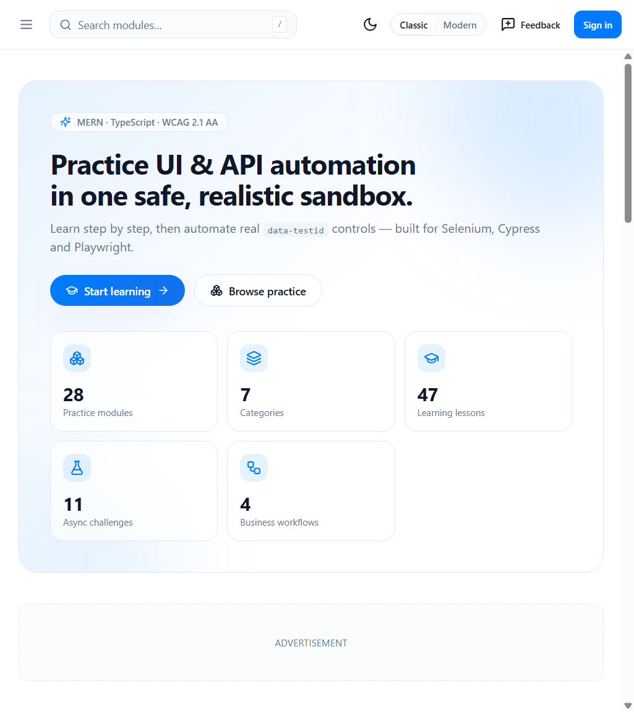
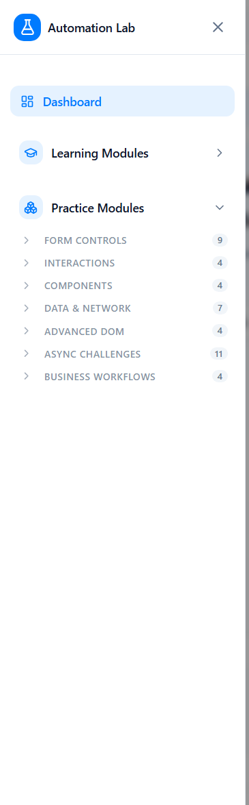
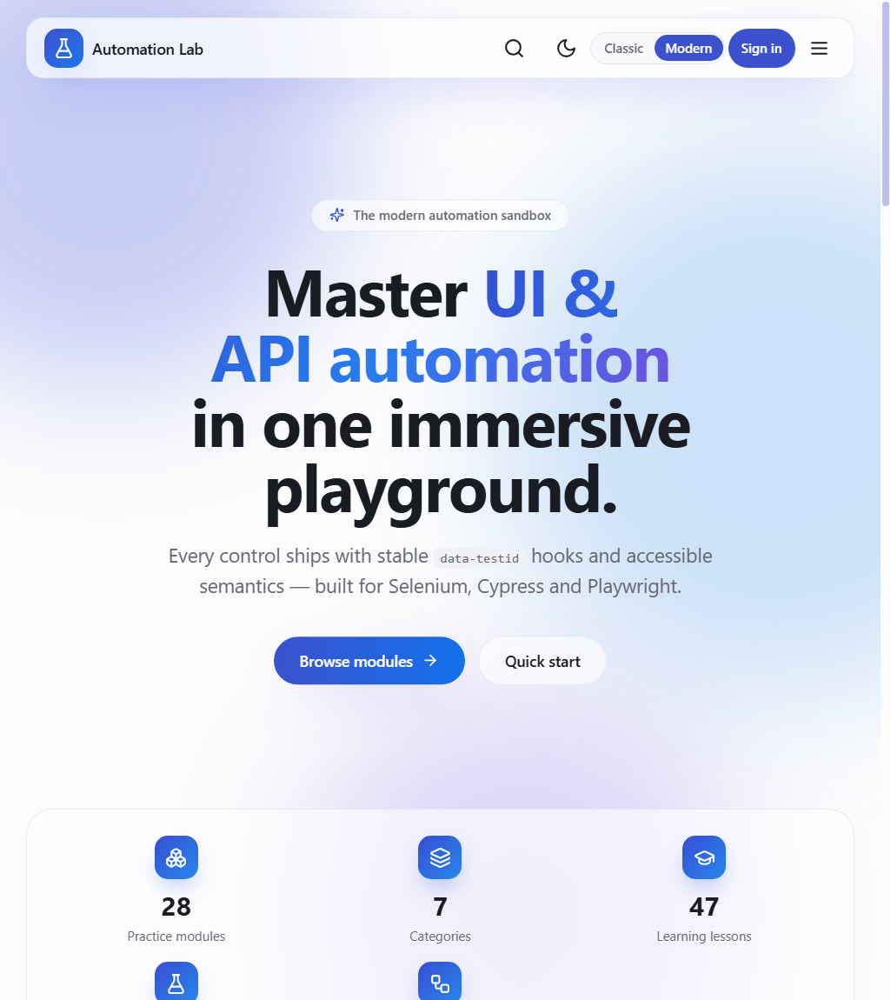
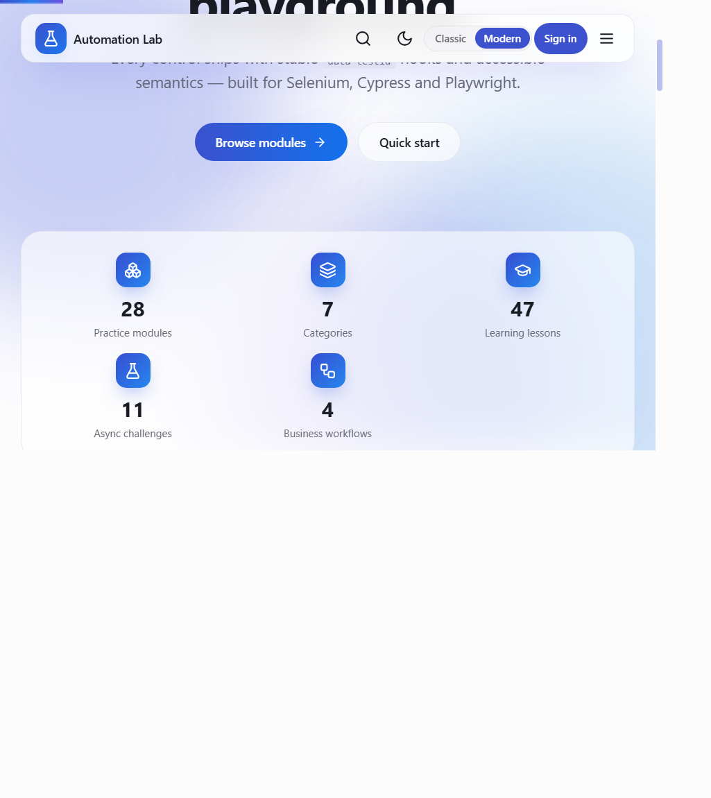
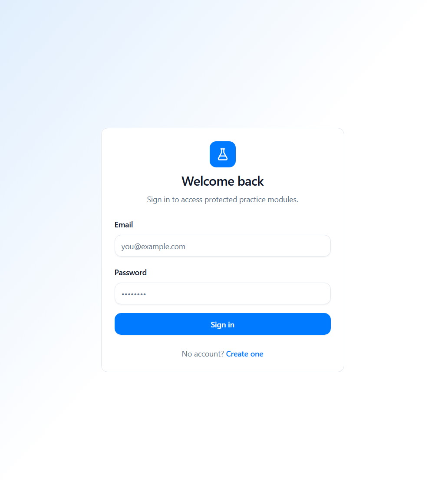
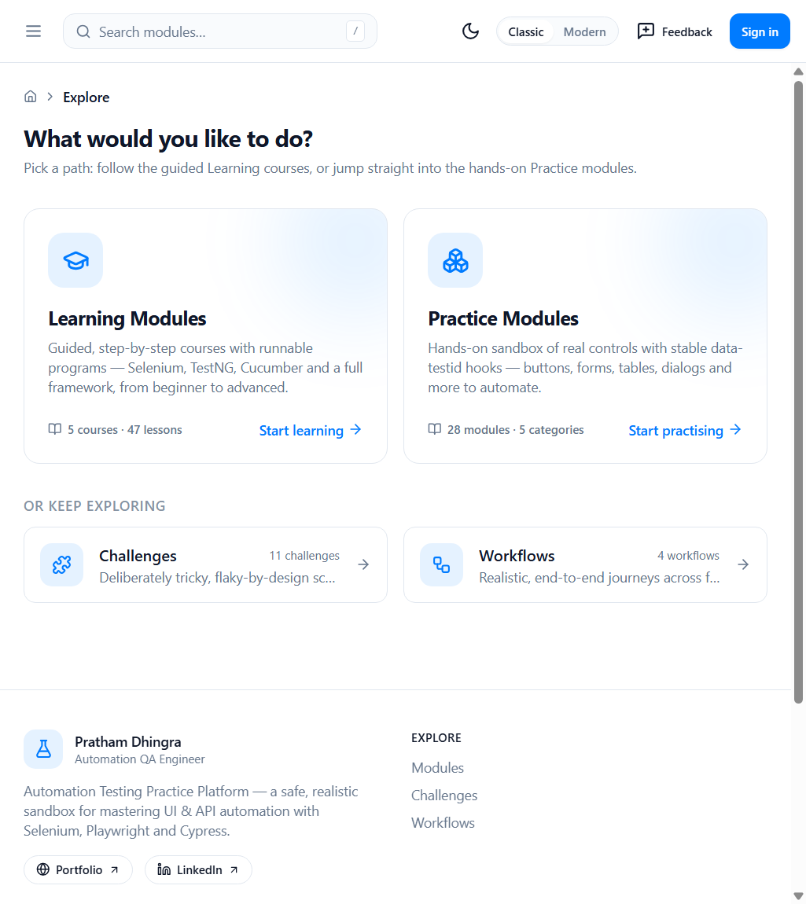
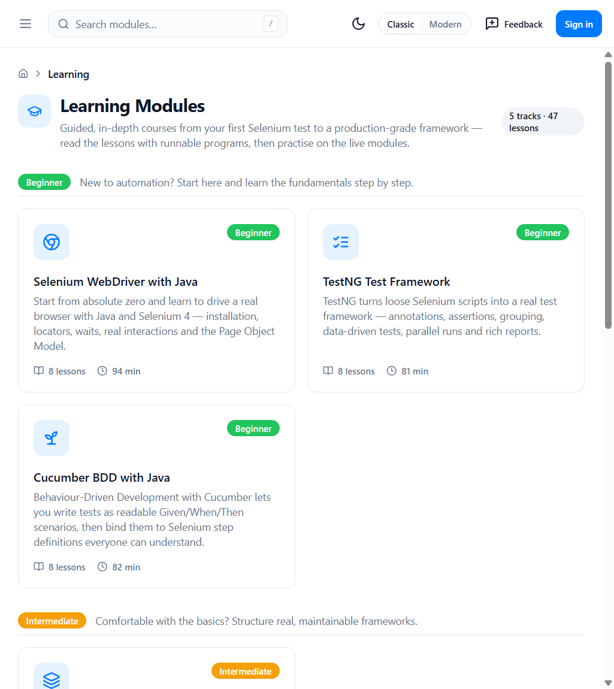
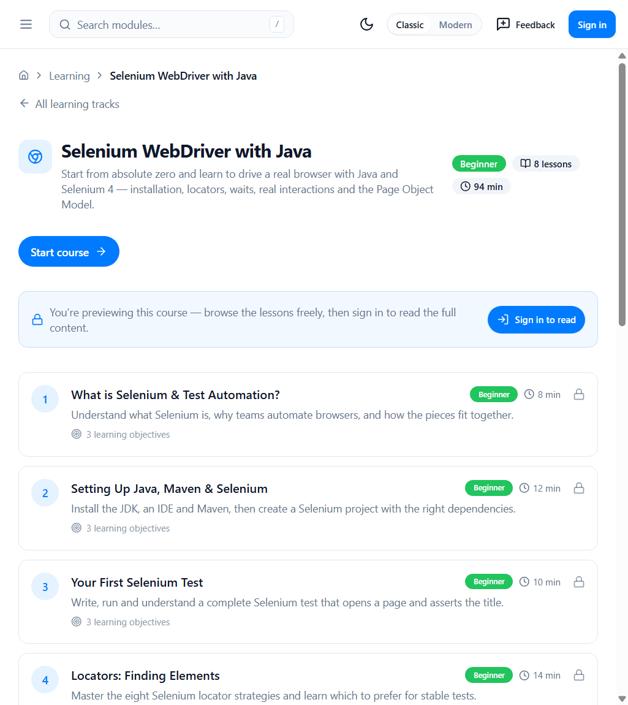
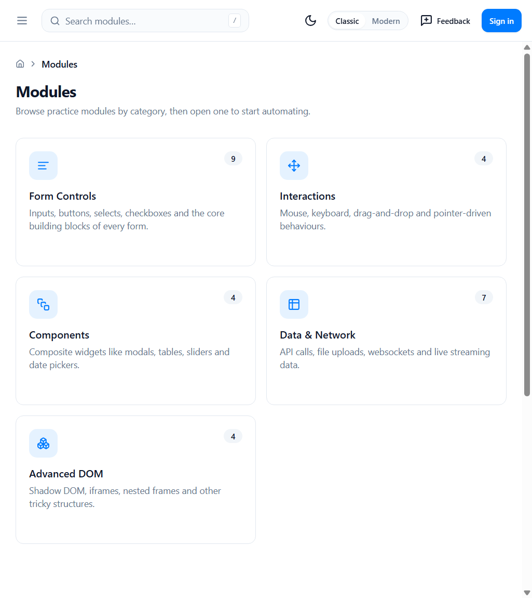
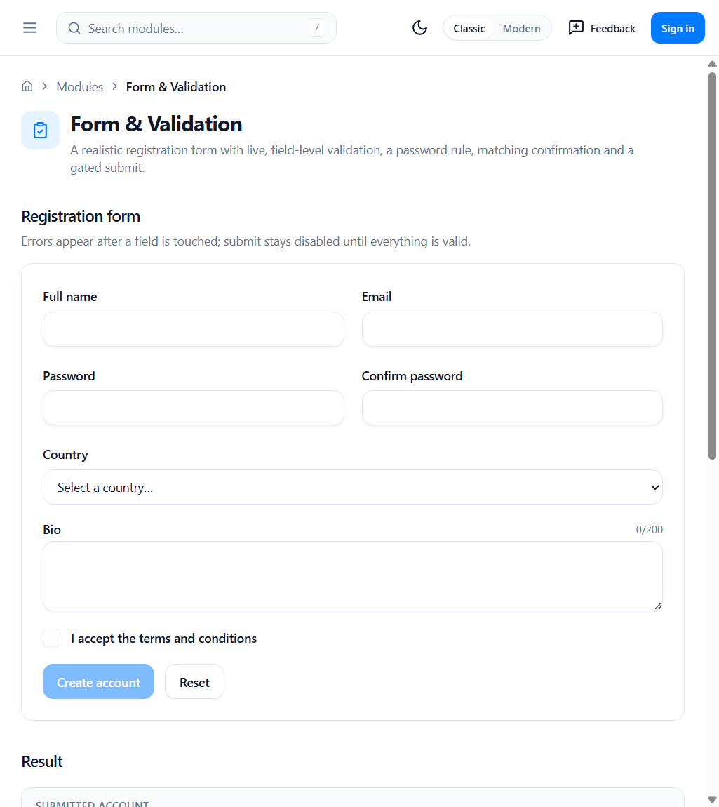

A complete visual guide — every flow, screenshot & diagram explained
MERN · React + TypeScript · Express · MongoDB · JWT · WebSockets • 28 practice modules · 5 learning courses (47 lessons)
Each screen is shown in a browser frame. Blue boxes and numbered circles (1, 2 …) highlight the important controls; the numbered list under every screenshot explains exactly what each one does. Diagrams use Mermaid flow / sequence charts to show how data and the user move through the app.
Classic / Modern toggle in the
top bar to switch; your choice is remembered.
Two roles ship with the seed data. The login screen does not display them — keep this sheet handy.
| Role | Password | What it unlocks | |
|---|---|---|---|
| USER | user@practice.dev |
User1234! |
Full lesson content, all practice modules, async challenges & business workflows |
| ADMIN | admin@practice.dev |
Admin123! |
Everything a user can do plus User Management & the Test-Data Generator |
POST /api/auth/login with the credentials in the request
body. The email and password are never placed in the URL/query string, so they cannot leak
through browser history, server logs or referrer headers.

1 2 3
1 2 3
1
From the dashboard, everything is two clicks away. “Modules” always branches into the guided Learning courses and the hands-on Practice sandbox.
flowchart TD
Home([Dashboard / Home]) --> Explore[Modules hub · /explore]
Home --> Challenges[Challenges]
Home --> Workflows[Workflows]
Home --> Search[(Global search
modules + courses)]
Explore --> Learning[Learning Modules · /learning]
Explore --> Practice[Practice Modules · /modules]
Learning --> Track[Course · lessons list]
Track --> Lesson[Lesson content 🔒]
Practice --> Cat[Category] --> Module[Module page]
Home -.admin only.-> Admin[Admin Panel]
A single-page React app talks to an Express API (controller → service → repository) over REST + WebSockets, backed by MongoDB.
flowchart LR
subgraph Client["Browser"]
SPA["React 18 SPA
Redux Toolkit · TanStack Query"]
end
subgraph Server["Node.js API (Express)"]
REST["REST controllers"]
WS["Socket.IO gateway"]
SVC["Service layer"]
REPO["Repository layer"]
end
DB[("MongoDB")]
SPA -->|HTTPS /api| REST
SPA -->|WebSocket| WS
REST --> SVC --> REPO --> DB
WS --> SVC
JWT access + refresh tokens. The SPA auto-refreshes on a 401 and redirects guests to the sign-in screen when they reach a protected page.
sequenceDiagram
actor U as User
participant C as React SPA
participant A as API (Express)
participant DB as MongoDB
U->>C: Enter email + password
C->>A: POST /api/auth/login (creds in body)
A->>DB: Find user + bcrypt compare
DB-->>A: User record
A-->>C: 200 · accessToken · httpOnly refresh cookie
C->>A: GET /api/auth/me
A-->>C: Current user
C-->>U: Redirect back to the page they wanted
Note over C,A: On 401 the SPA calls POST /api/auth/refresh

Clicking Browse modules opens a chooser so visitors decide between learning and practising before drilling in.

1 2The Learning area teaches automation step by step — Selenium, TestNG, Cucumber, building a full framework, and advanced techniques. Anyone can browse the course catalogue and every lesson’s name & summary; reading a full lesson requires signing in, so the content stays gated while discovery stays open.
flowchart TD
A([Open Learning · /learning]) --> B[Catalogue by level
Beginner · Intermediate · Advanced]
B --> C[Open a course
see all lesson names + summaries]
C --> D{Click a lesson}
D -->|Signed in| E[Read full lesson
+ runnable code + “Practice side by side”]
D -->|Guest| F[Redirect to /login]
F --> G[Sign in] --> E

1 2
1 2 3/login and bounced back to the
lesson after signing in.
The practice sandbox groups 28 modules into categories. Every interactive element exposes a stable data-testid and proper ARIA roles.

1
1 2Other new modules added in this style: Toggle Switches, Clipboard, Accordion, Tabs, Pagination, Search & Filter and Canvas.
Everything a signed-in user (user@practice.dev) can reach.
flowchart TD
Start([Visit app]) --> Auth{Authenticated?}
Auth -- No --> Browse[Browse: home · explore · learning catalogue · practice]
Browse --> Gate[Open lesson / workflow] --> SignIn[Sign in]
Auth -- Yes --> Dash[Dashboard]
SignIn --> Dash
Dash --> Learning[🎓 Learning Courses
read full lessons]
Dash --> Modules[🧩 28 Practice Modules]
Dash --> Challenges[🌀 Async / Dynamic Challenges]
Dash --> Workflows[🏢 Business Workflows]
Workflows --> Shop[E-commerce]
Workflows --> Bank[Banking]
Workflows --> Crm[CRM]
Workflows --> Emp[Employees]
An admin (admin@practice.dev) gets everything a user does, plus privileged tools.
flowchart TD
A([Sign in as admin]) --> D[Dashboard + Admin Panel]
D --> All[Everything a user can do]
D --> UM[User Management]
D --> TD[Test-Data Generator]
UM --> CU[Create / Update / Delete users & roles]
TD --> Gen[Bulk-generate products · orders · customers · employees]
flowchart TD
P[Browse products] --> Cart[Add to cart]
Cart --> Place[Place order] --> API[(POST /api/orders)]
API --> S[pending → paid → shipped → delivered]
flowchart TD
Acc[Select account] --> Amt[Enter amount] --> T[Transfer]
T --> V{Enough balance?}
V -- Yes --> OK[Update + receipt]
V -- No --> Err[Validation error]
stateDiagram-v2
[*] --> lead
lead --> active: convert
active --> inactive: churn
inactive --> active: re-engage
active --> [*]
flowchart LR
E([Employees]) --> L[List · search · paginate]
L --> C[Add] --> A1[(POST)]
L --> U[Edit] --> A2[(PUT)]
L --> Del[Delete] --> A3[(DELETE)]
erDiagram
USER { string id PK
string email UK
string role }
PRODUCT { string id PK
string sku UK
number price }
ORDER { string id PK
string orderNumber UK
string status }
ORDER_ITEM { string product FK
number quantity }
CUSTOMER { string id PK
string status }
EMPLOYEE { string id PK
string employeeId UK }
ORDER ||--o{ ORDER_ITEM : embeds
ORDER_ITEM }o--|| PRODUCT : references
Frontend on a static host, backend on Render, database on MongoDB Atlas, kept awake by UptimeRobot.
flowchart LR
Dev[You] -->|git push| GH[(GitHub repo)]
GH -->|auto deploy| V[Static host · React SPA]
GH -->|auto deploy| R[Render · Express API]
User((User)) -->|HTTPS| V
V -->|/api over HTTPS| R
R -->|mongodb+srv| Atlas[(MongoDB Atlas)]
UR[UptimeRobot] -->|ping /api/health every 5 min| R
| Piece | Platform | Key setting |
|---|---|---|
| Frontend | Cloudflare Pages / Netlify / Vercel | VITE_API_URL=https://<api>.onrender.com/api · SPA fallback to /index.html |
| Backend | Render | NODE_ENV=production, MONGODB_URI, JWT secrets, FRONTEND_URL |
| Database | MongoDB Atlas | Network access allow-list |
| Keep-alive | UptimeRobot | Ping /api/health every 5 min |
| Course | Level | Lessons |
|---|---|---|
| Selenium WebDriver with Java | Beginner | 8 |
| TestNG Test Framework | Beginner | 8 |
| Cucumber BDD with Java | Beginner | 8 |
| Build a Selenium Java Framework | Intermediate | 14 |
| Advanced Selenium Automation | Advanced | 9 |
| Category | Modules |
|---|---|
| Form Controls (9) | Inputs · Buttons · Dropdowns · Checkboxes · Radios · Sliders · Date Picker · Form & Validation · Toggle Switches |
| Interactions (4) | Drag & Drop · Mouse Actions · Keyboard · Clipboard |
| Components (4) | Modals · Accordion · Tabs · Pagination |
| Data & Network (7) | Tables · File Upload · API Console · WebSockets · Infinite Scroll · Auth Demo · Search & Filter |
| Advanced DOM (4) | Shadow DOM · iFrames · Nested Frames · Canvas |
| Async Challenges (11) | Autocomplete · Wizard · Dynamic IDs · Delayed Loading · Random Elements · AJAX · Toasts · Stale Elements · Spinners · Alerts · Tooltips |
| Business Workflows (4) | E-commerce · Banking · CRM · Employees |
Bold = newly added modules.